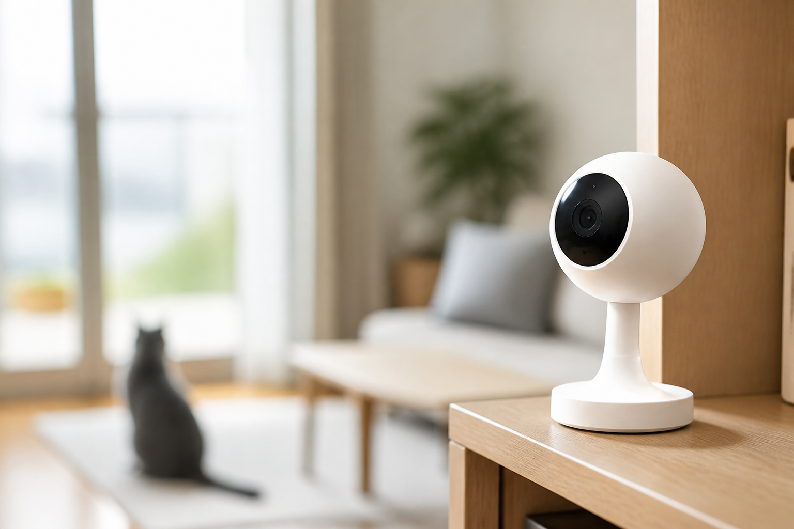

再起動の重要性！

以前、くらしのマーケットからWebカメラの設定をご依頼いただきました。
お客様に詳しくお話を伺ったところ、
「以前、業者にWebカメラを設置してもらったが、最近になってアプリからカメラの映像を見ることができなくなった」
ということでした。
お客様はカメラやインターネットにあまり詳しくないとのことでしたので、事前に原因を特定するのは難しいと判断し、いくつか注意事項をお伝えしたうえで訪問しました。
まずはWi-Fiを確認
現地に到着して、まず確認したのがWi-Fiです。
確認してみると、2.4GHzのWi-Fiはエラーが出ており、「インターネットに接続できません」という状態になっていました。
一方、5GHzのWi-Fiは問題なくインターネットに接続できています。
「それならWebカメラを5GHzに接続すればいいのでは？」
と思い、Webカメラの仕様を確認してみました。
ところが、残念ながらそのWebカメラは5GHzのWi-Fiに対応していませんでした。
そこでモデムを再起動！
Webカメラは2.4GHzしか利用できません。
そこで、
「2.4GHzのエラーを解消できれば、Webカメラも復旧するのでは？」
と考え、モデムを再起動してみることにしました。
そして再起動後、もう一度確認してみると……
無事にWebカメラの映像が表示されました！
今回のトラブルは、なんとモデムを再起動するだけで解決しました。
再起動は意外と重要
今回のように、Wi-Fiやインターネット関係のトラブルは、機器を再起動するだけで改善することがあります。
「急にインターネットにつながらなくなった」
「Wi-Fiはつながっているのに、機器がインターネットにつながらない」
「昨日まで使えていたWebカメラが見られなくなった」
そんなときは、まず一度再起動を試してみてください。
もちろん、再起動しても直らない場合は、別の原因がある可能性があります。
それでも、難しい設定をする前に、
「まずは再起動！」
これだけで解決することも意外と多いですよ。
見守りカメラやペットカメラの設定でお困りの方は、 暮らしのマーケット掲載サービス もご利用いただけます。